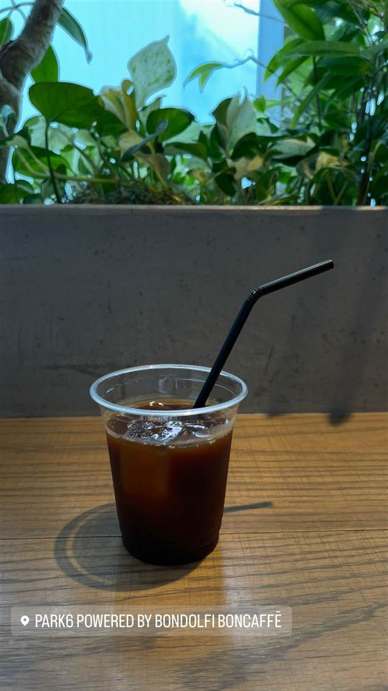

PARK6 Powered by bondolfi boncaffè
ローマ150年超の老舗焙煎所の豆を使うアイスコーヒー
PARK6 POWERED BY BONDOLFI BONCAFFÈ
六本木ヒルズにある、カフェとワークスペースを兼ねたラウンジ「PARK6」。1855年創業でローマに150年以上愛されてきた老舗焙煎所bondolfi boncaffèの豆を使い、イタリア直輸入食材の料理も楽しめる。
TRIVIA
豆知識
- コーヒー豆はローマで1855年創業の老舗焙煎所bondolfi boncaffèのもの
- カフェと時間制ワークスペースを兼ねたラウンジになっている
REVIEWS
世間の評判
3.25食べログ
ビュッフェランチのコスパの良さ
- 1300円のビュッフェでコスパが良いという声が多い
- 電源やWi-Fiが整い作業しやすい環境だという意見が多い
- 緑が多く落ち着いた空間で穴場だと評価する人もいる
- 休日はメニューが限定され選択肢が少ないという指摘もある
食べログ 口コミ87件
| 創業 | PARK6は2017年11月、六本木ヒルズに森ビルが開業。コーヒー豆元のbondolfi boncaffèは1855年イタリア・ローマ創業。 |
|---|---|
| 系譜 | ローマで150年以上の歴史を持つ老舗焙煎所「bondolfi boncaffè」の豆を使うカフェ併設ワークラウンジ。 |
| 看板 | アイスコーヒー、イタリア直輸入食材を使った料理 |
| こだわり | 1855年創業のローマの老舗焙煎所bondolfi boncaffèの豆を使い、深い風味とまろやかな苦みのコーヒーを提供。キッチンではイタリアから直輸入した食材も使う。 |
| どこから | 都心 |
| 営業時間 | 月〜金 10:00-19:00 土 11:00-19:00 日 休み |
| 予算 | 昼 ～¥999 夜 ¥3,000～¥3,999 |
| 定休日 | 日曜・祝日 |
| 場所 | 六本木 東京都港区六本木6-10-1 六本木ヒルズ森タワーウェストウォーク6F |
| メモ | 六本木ヒルズ森タワー ウェストウォーク6F。時間制のワークスペースを兼ねたカフェラウンジ。 |
食べたもの：アイスコーヒー
NEARBY
近い店・同じ系統の店
-
 ★
醤油・中華そば 六本木駅
入鹿TOKYO 六本木店
鶏・豚・貝・海老を別々に炊く独自のカルテットスープ
昼 ¥1,000～¥1,999 夜 ¥1,000～¥1,999
★
醤油・中華そば 六本木駅
入鹿TOKYO 六本木店
鶏・豚・貝・海老を別々に炊く独自のカルテットスープ
昼 ¥1,000～¥1,999 夜 ¥1,000～¥1,999
-
 ピザ 六本木
シシリア 六本木店
1954年創業、四角い薄焼きピザとグリーンサラダが名物
昼 ¥1,000～¥1,999 夜 ¥4,000～¥4,999
ピザ 六本木
シシリア 六本木店
1954年創業、四角い薄焼きピザとグリーンサラダが名物
昼 ¥1,000～¥1,999 夜 ¥4,000～¥4,999
-
 イタリアン 六本木
KNOCK CUCINA BUONA ITALIANA 六本木ヒルズ店
ピエモンテ仕込みのシェフが作る「山のイタリアン」ブッラータ
昼 ¥1,000～¥1,999 夜 ¥8,000～¥9,999
イタリアン 六本木
KNOCK CUCINA BUONA ITALIANA 六本木ヒルズ店
ピエモンテ仕込みのシェフが作る「山のイタリアン」ブッラータ
昼 ¥1,000～¥1,999 夜 ¥8,000～¥9,999
-
 うなぎ 六本木駅
鰻處 黒長堂 六本木ヒルズ店
関東では珍しい、蒸さず炭火で直焼きする地焼きのうな重
昼 ¥5,000～¥5,999 夜 ¥8,000～¥9,999
うなぎ 六本木駅
鰻處 黒長堂 六本木ヒルズ店
関東では珍しい、蒸さず炭火で直焼きする地焼きのうな重
昼 ¥5,000～¥5,999 夜 ¥8,000～¥9,999
-
 タイ 六本木
BIANCHI / BIANCHI mini me
ランチとディナーで店名を変えて営業するタイ屋台のカオマンガイ
夜 ¥6,000～¥7,999
タイ 六本木
BIANCHI / BIANCHI mini me
ランチとディナーで店名を変えて営業するタイ屋台のカオマンガイ
夜 ¥6,000～¥7,999
-
 ハワイ 六本木駅
POKEDO MARKET（ポケドゥマーケット）
具材を自由に選べる本場ハワイ仕込みのカスタムポケ丼
昼 ¥2,000～¥2,999 夜 ¥3,000～¥3,999
ハワイ 六本木駅
POKEDO MARKET（ポケドゥマーケット）
具材を自由に選べる本場ハワイ仕込みのカスタムポケ丼
昼 ¥2,000～¥2,999 夜 ¥3,000～¥3,999
ONSEN & SAUNA